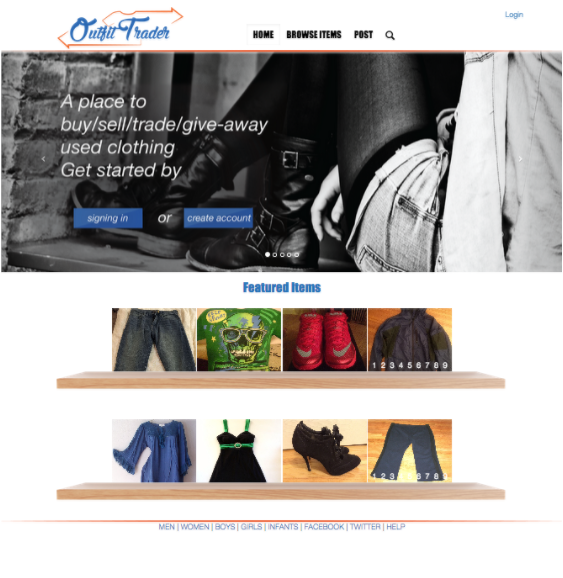
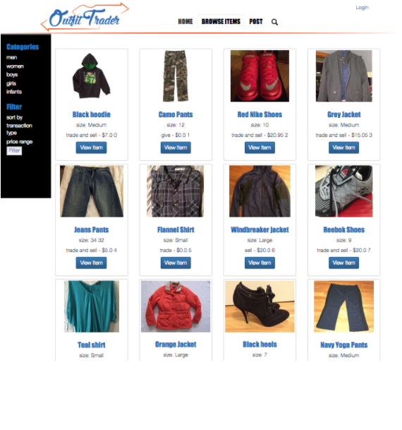
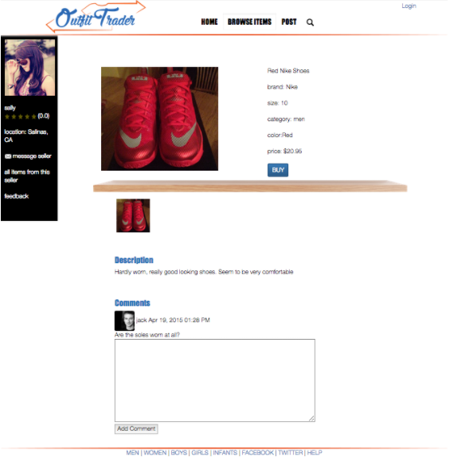

CST 400:
Students create a detailed proposal of and produce a prototype of a substantial, professional
level project with an approval of the student's capstone advisor. Students learn and practice
project management, collaboration and presentation skills required in the industry.
CST 401:
Laboratory course supports students during the creation of their Capstone projects and assessment
for Capstone outcomes.
CST 496:
Provides a framework for a substantial research and development effort: ideation, proposal writing,
project management, presentation, documentation, and/or evaluation. Provides one-on-one guidance
on students' research and development effort within the School of Information Technology and
Communications Design disciplines. All students, including non-majors, working on their Capstone
projects with faculty members in ITCD must register for CST 496.
Senior Capstone was a collaboration between my classmate Andrea Nelson and I, to create a website for
a CSUMB Alumni, Rick Brandley. Rick came to us looking to create a website that made it easy to buy,
sell , and trade articles of clothing in an online user-based marketplace. Our first priority after
understanding the concept was to create name and logo. Outfit Trader was name that was finally decided on
as it was quick and concise to understand as well made it strongly apparent it was for all types of
clothing as other names seem to suggest certain limitations. The concept behind the sites design, was to
be reminiscent of being in a closet. Hangers and shelves used as dividers between rows to break up what
would be an all white background. It retains a clean an organized look in order to browse with ease and
filtering functions by category, and ability to message sellers/buyers.
The logo design uses a yellow and an orange arrow pointing opposite directions to symbolize swapping or
trading. The two arrows create a silhouette of a shirt that frames the name "Outfit Trader".


